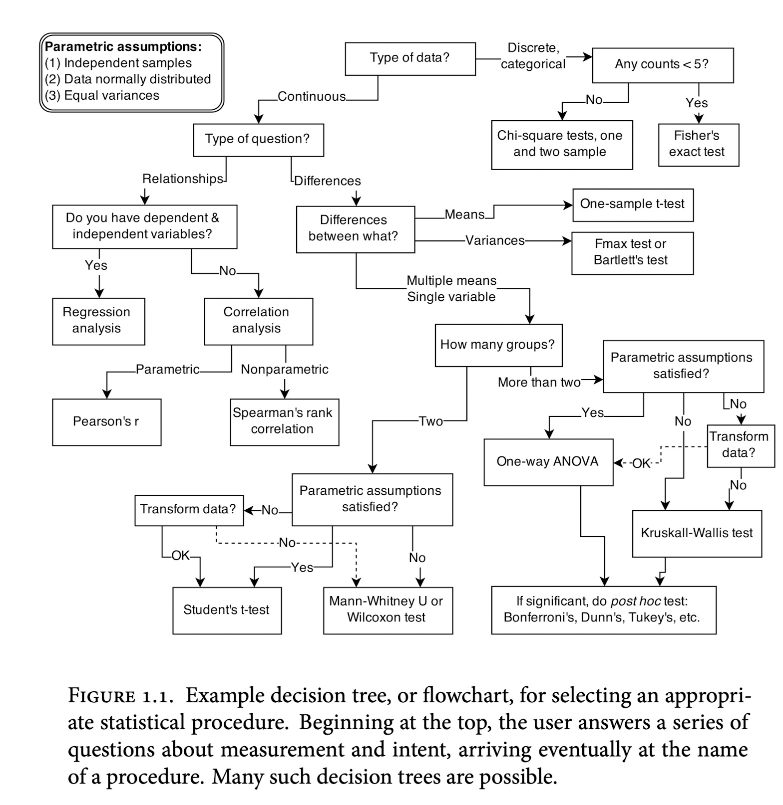

Este es un curso de modelación bayesiana aplicada, que se concentra en plantear y resolver problemas aplicados usando estadística. Para hacer esto necesitamos entender tres componentes:
El contexto del problema, o conocimiento del área: esto es conocimiento científico o de negocios y cómo es que observamos o medimos el fenómeno que nos interesa.
En vista del contexto del problema (1), ¿cómo construir modelos estadísticos para responder preguntas de interés?
Práctica de construcción y desarrollo de modelos, junto con procedimientos para criticarlos y probarlos.
Este proceso aplica tanto a estadística bayesiana como frecuentista, aunque en este curso, por su flexibilidad y unidad, consideraremos el enfoque bayesiano. Para la parte 1 y 2, consideraremos modelos gráficos causales, que expresan nuestro conocimiento acerca del problema de interés. Para la parte 3 propondremos un flujo de trabajo bayesiano que nos permita probar y entender el funcionamiento de nuestros modelos. Finalmente, para 2 y 3 propondremos distintas estrategias de modelación, como son modelos jerárquicos, regresión, como trabajar con datos faltantes entre otros.
Las razones de cómo hacemos análisis estadístico (que procedimiento o algoritmo seleccionamos, por ejemplo) en un problema dado no están en los datos observados, las causas de los datos.
Las causas de los datos no pueden extrarse de los datos solamente. Muchas veces nos referimos a las causas de los datos como el proceso generador de los datos: esto incluye aspectos del fenómeno que nos interesa (ciencia o proceso de negocios, etc.), así como el proceso de observación (muestras, valores no observados, etc.).
Consideremos un ejemplo simple para ilustrar este primer principio:
Ejemplo (cálculos renales)
Este es un estudio real acerca de tratamientos para cálculos renales (Julious y Mullee (1994)). Pacientes se asignaron de una forma no controlada a dos tipos de tratamientos para reducir cálculos renales. Para cada paciente, conocemos el tipo de ćalculos que tenía (grandes o chicos) y si el tratamiento tuvo éxito o no.
La tabla original tiene 700 renglones (cada renglón es un paciente)
y parece ser que el tratamiento \(B\) es mejor que el \(A\). Esta es una paradoja (un ejemplo de la paradoja de Simpson) . Si un médico no sabe que tipo de cálculos tiene el paciente, ¿entonces debería recetar \(B\)? ¿Si sabe debería recetar \(A\)? Esta discusión parece no tener mucho sentido.
Podemos investigar por qué está pasando esto considerando la siguiente tabla, que solo examina cómo se asignó el tratamiento dependiendo del tipo de cálculos de cada paciente:
Nuestra hipótesis aquí es que la decisión de qué tratamiento usar depende del tamaño de los cálculos. En este caso, hay una decisión pues A es una cirugía y B es un procedimiento menos invasivo, y se prefiere utilizar el tratamiento \(A\) para cálculos grandes, y \(B\) para cálculos chicos. Esto quiere decir que en la tabla total el tratamiento\(A\) está en desventaja porque se usa en casos más difíciles, pero el tratamiento \(A\) parece ser en general mejor. La razón es probablemente un proceso de optimización de recursos y riesgo que hacen los doctores.
En este caso, una mejor respuesta a la pregunta de qué tratamiento es mejor es la que presenta los datos desagregados.
La tabla desagregada de asignación del tratamiento nos informa acerca de cómo se está distribuyendo el tratamiento en los pacientes.
Nota
Los resúmenes descriptivos acompañados de hipótesis causales acerca del proceso generador de datos, nos guía hacia descripciones interpretables de los datos.
Las explicaciones no son tan simples y, otra vez, interviene el comportamiento de doctores, tratamientos, y distintos tipos de padecimientos.
Podemos codificar la información causal con un diagrama:
Código
grViz("digraph { graph [ranksep = 0.2] node [shape=plaintext] T M C edge [minlen = 3] T -> M C -> T C -> M{ rank = same; M; T }}", width =200, height =50)
Es decir, el tamaño de los cálculos es una causa común de tratamiento (T) y resultado (M). Veremos más adelante que la decisión de condicionar a el tipo de cálculos proviene de un análisis relativamente simple de este diagrama causal, independientemente de los métodos que usemos para estimar las proporciones de interés (en este ejemplo, examinar las tablas cruzadas es equivalente a hacer estimaciones de máxima verosimlitud).
Ejemplo (cálculos renales 2)
Contrastemos el ejemplo anterior usando exactamente la misma tabla de datos, pero con el supuesto de un proceso generador diferente. En este caso, los tratamientos son para mejorar alguna enfermedad del corazón. Sabemos que parte del efecto de este tratamiento ocurre gracias a una baja en presión arterial de los pacientes, así que después de administrar el tratamiento, se toma la presión arterial de los pacientes. Ahora tenemos la tabla agregada y desagregada como sigue:
¿Cuál creemos que es el mejor tratamiento en este caso? ¿Deberíamos usar la tabla agregada o la desagregada por presión?
En este caso, la tabla agregada es más apropiada (B es mejor tratamiento).
La razón es que presión en este caso es una consecuencia de tomar el tratamiento, y como las tablas muestran, B es más exitoso en bajar la presión de los pacientes.
Si sólo comparamos dentro de los grupos de presión baja o de presión alta, ignoramos lo más importante del tratamiento en la probabilidad de mejorar.
Nuestros supuestos causales podemos mostrarlos con el siguiente diagrama:
Código
grViz("digraph { graph [ranksep = 0.2] node [shape=plaintext] P T M edge [minlen = 3] T -> P P -> M T -> M{ rank = same; M; T}}", width =200, height =50)
Nótese que el análisis más apropiado no está en los datos: en ambos casos la tabla de datos es exactamente la misma. Los supuestos acerca del proceso que genera los datos sin embargo nos lleva a respuestas opuestas.
Diagramas causales
Los diagramas de arriba se llaman DAGs (Gráficas dirigidas acíclicas), y no son generadas por datos observados, sino que codifican conocimiento acerca del fenómenos y los datos observados. Nos ayudan a (McElreath (2020)):
Pensar claramente en términos científicos/de negocio acerca de nuestro problema
Expresar los supuestos que hacemos que soportan nuestro análisis
Entender qué podemos entender o explicar, sin hacer supuestos adicionales acerca de las relaciones particulares entre las variables.
Guiar el análisis para decidir que modelos o procedimientos usar para contestar preguntas de interés.
Los DAGs se construyen con causas, e implican asociaciones observables, pero no se construyen con asociaciones simplemente. El pensamiento causal es útil siempre que queremos responder preguntas acerca de un fenómeno de interés. En particular nos asisten en :
Análisis descriptivo
Como vimos en el ejemplo anterior, incluso el análisis descriptivo (qué tabla usar, qué gráfica usar) de datos requiere de un análisis causal.
Muchas veces los datos que tenemos, por distintas razones, tienen características que requieren procesarlos (por ejemplo ponderarlos) para que nos den respuestas entendibles.
Inferencia causal
Efectos de intervenciones: En algunos casos, queremos saber consecuencias de una intervención sobre un sistema o proceso dados (por ejemplo, ¿cuántos accidentes graves habría si pusiéramos una multa por no usar cinturón de seguridad?). Esto requiere utilizar pensamiento causal.
Contrafactuales: También es usual necesitar pensar cómo serían las cosas si el pasado se hubiera desarrollado de manera distinta (por ejemplo, ¿cómo serían las ventas si no se hubiera gastado en publicidad?) en publicidad ?).
Diseño de estudios o experimentos
Si queremos recolectar datos acerca de un fenómeno particular (por ejemplo, ¿cómo debo seleccionar una muestra para medir orientación política de una población?), diseños eficientes requieren tener conocimiento de dominio acerca de las causas de las variables que nos interesa medir. Por ejemplo, si queremos tomar una muestra de casillas para estimar el resultado de una votación, deberíamos considerar variables geográficas como distrito electoral, grado de urbanización, etc.
Predicción
Incluso en problemas de predicción, modelos útiles resultan de pensar en la estructura causal del problema. Ignorar estos aspectos puede llevar fácilmente a evaluación incorrecta del desempeño, filtración de datos, o modelos que no pueden implementarse en la práctica.
Otro ejemplo (admisiones de Berkeley)
Una ejemplo al que regresaremos más adelante es el siguiente: en 1973 se recolectaron datos agregados de solicitantes para estudiar en Berkeley para los 6 departamentos más grandes, clasificados por sexo del solicitante y si fue admitido o no. Los resultados se muestran a continuación:
La pregunta que queremos hacer es: ¿existe discriminación por sexo en la selección de candidatos? Examinando las tablas no está clara cuál es la respuesta.
Discutiremos este ejemplo con más detalle más adelante. La interpretación debe ser hecha con cuidado, y debemos establecer claramente los supuestos que fundamentan nuestra decisión de mostrar cada tabla y de qué forma mostrarlas.
1.2 Modelos y algoritmos
En muchos cursos introductorios de estadística se muestran distintos tipos de procedimientos, que aplican según el tipo de datos (por ejemplo, categóricos o numéricos, pareados, no pareados, etc), generalmente con el propósito de evaluar evidencia en contra de una hipótesis nula. Por ejemplo, de McElreath (2020):

Ejemplo de proceso de decisión para procedimientos estadísticos
Este enfoque puede ser confuso en un principio (¿cómo se relacionan todos estos procedimientos?), y también restringir nuestra capacidad para analizar datos: ¿qué hacemos cuando no se cumplen los supuestos de un procedimiento? Adicionalmente si no tenemos mucha experiencia, la manera en que fallan estas herramientas puede ser poco intuitiva y difícil de descubrir.
Y aunque son herramientas poderosas, no sustituyen el pensamiento científico o de proceso de negocios. Estas herramientas no generan hallazgos si no están acompañados de pensamiento causal.
Buscamos entonces:
Dar herramientas (bayesianas) para analizar datos que son más flexibles, y se puedan adaptar a distintas situaciones.
Proponer un proceso para analizar datos, que sea más sistemático, robusto, y maneras de checar que el proceso es correcto o hace lo que pensamos que tiene qué hacer.
Ligar 1 y 2 con supuestos causales claros para proponer una interpretación sólida de nuestros resultados.
1.3 Análisis como proceso
Iremos refinando nuestro poco a poco, conforme veamos distintas herramientas y problemas. El más básico es el siguiente (McElreath (2020)):
Definir un modelo generativo para la muestra de datos.
Definir la cantidad que queremos estimar en relación al fenómeno de interés.
Definir un proceso estadístico para hacer una estimación.
Probar el proceso 3 usando 1 y 2.
(Usar datos) Analizar los datos, resumir resultados.
Checar cómputos y desempeño del modelo.
Este proceso no es exclusivo de los modelos bayesianos, pero quizá es más natural, como veremos, cuando adoptamos el punto de vista bayesiano. Su propósito es múltiple: verificar que nuestros modelos están estimando las cantidades que realmente nos interesan, según nuestros supuestos, verificar los programas y cómputos con los que se obtienen resultados, y checar la adecuación del modelo a datos reales, cuestionando supuestos teóricos y supuestos de modelación.
Cualquier proceso de análisis de datos se beneficia de muchos aspectos de ingenería de software. Parte de la profesionalización del análisis de datos que observamos en ciencia de datos es utilizar las herramientas reconocidas para resolver problemas de desarrollo y calidad de código, así como su documentación.
Análisis como software: Una parte de este proceso está relacionado con la reproducibilidad y documentación del trabajo, y su objetivo es evitar errores de programación y de organización (esta parte hablaremos menos: es necesario seguir los estándares de la industria para obtener resultados más confiables).
Otra parte es el proceso con el cual construimos y contrastamos modelos para contestar preguntas, verificamos los modelos y sus respuestas y checamos resultados de cómputos.
Gelman, Andrew, Aki Vehtari, Daniel Simpson, Charles C. Margossian, Bob Carpenter, Yuling Yao, Lauren Kennedy, Jonah Gabry, Paul-Christian Bürkner, y Martin Modrák. 2020. «Bayesian Workflow». https://arxiv.org/abs/2011.01808.